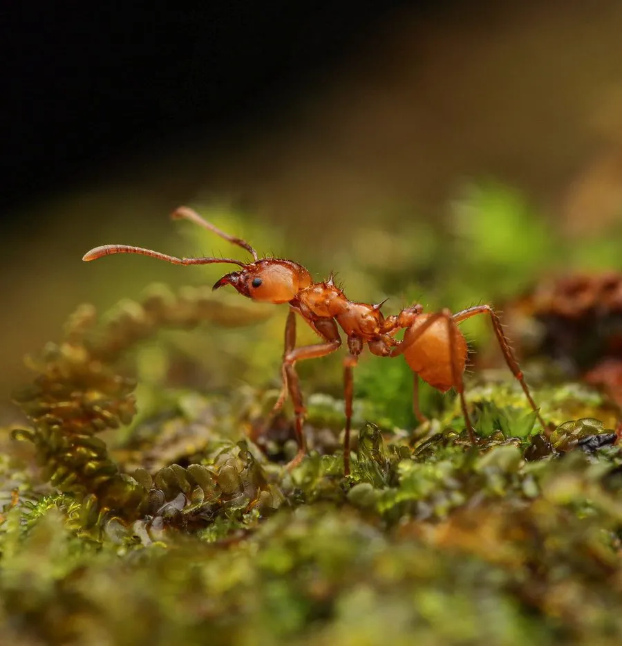

昆虫 · 动物界
切叶蚁 Atta cephalotes

把树叶切成小片运回地下巢穴、用来种植真菌的南美蚂蚁，群体可达数百万只，被誉为自带农场的昆虫。
- 分类
- 门节肢动物门纲昆虫纲目膜翅目科蚁科属切叶蚁属
- 栖息环境
- 热带雨林与农业区，地下筑大型巢系，巢口多堆成土丘
- 地理分布
- 墨西哥南部至巴西、秘鲁等中南美洲热带地区
- 保护级别
- 暂无评估
物种志
切叶蚁工蚁体长约 2–12 mm，同巢个体分化出小型、中型、大型工蚁和巨型兵蚁，体红褐色，头部大、上颚锋利。中型工蚁负责切割叶片，多数工蚁沿固定的信息素路径把叶片运回巢穴，巢口周围常堆着松软的土丘。受惊时兵蚁会集体出动保卫巢口。
切叶蚁并不直接吃叶片，而是把叶片嚼碎后用来培育一种担子菌，幼虫和蚁后都以菌圃中的真菌为食，工蚁还会携带链霉菌抑制杂菌。巢穴可深达数米，内部有通气孔调节温湿度。一个成熟群体可达数百万只，是热带雨林重要的食叶者和土壤翻动者，也会危害柑橘等农作物。它们分布于墨西哥南部到南美热带地区，与真菌的共生关系被视为昆虫农业的经典案例。
形态与习性
- 食性工蚁切叶培育真菌，以真菌为食，不直接吃叶片
- 体长工蚁约 2–12 mm，兵蚁头宽可达 5 mm
- 巢穴深可达数米，巢内有通气孔与分层菌圃
- 社会结构一巢可达数百万只，工蚁分化成多个类型
- 共生与担子菌长期共生，并携带链霉菌抑制杂菌
- 生态作用翻动土壤、促进养分循环，也会危害农作物
趣味知识
- 切叶蚁切的叶片并不直接吃，而是用来喂养巢内的真菌菌圃。
- 小型工蚁常搭车趴在叶片上，防止寄生蝇袭击切叶工蚁。
- 蚁巢通气孔能调节温湿度，使菌圃维持相对稳定的环境。